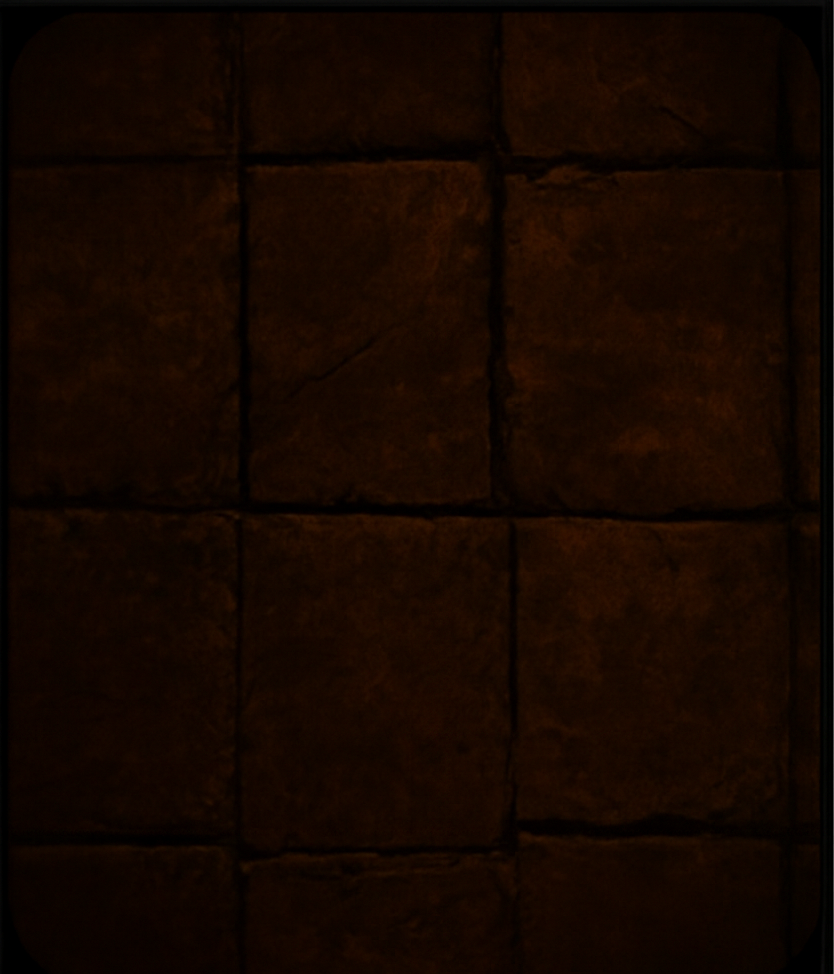
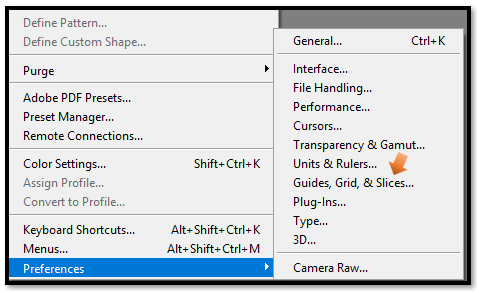
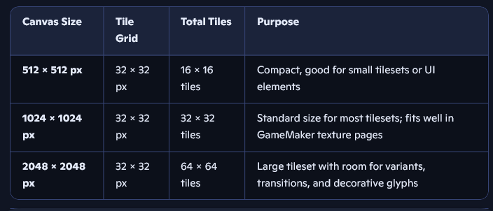
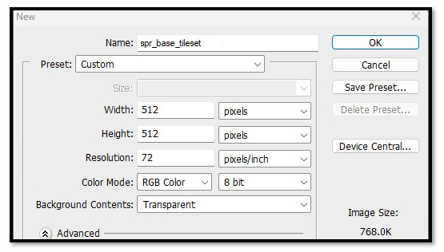
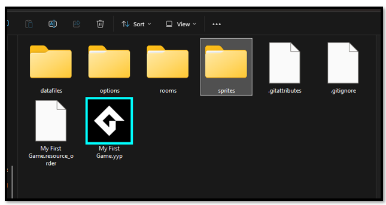
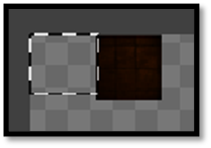
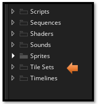
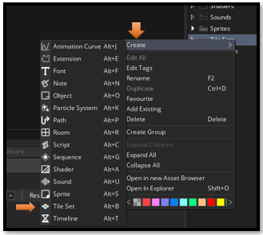
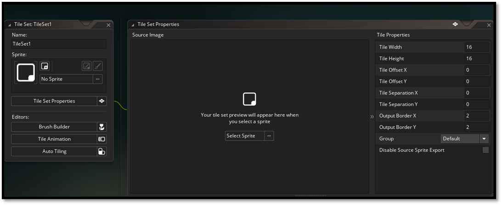
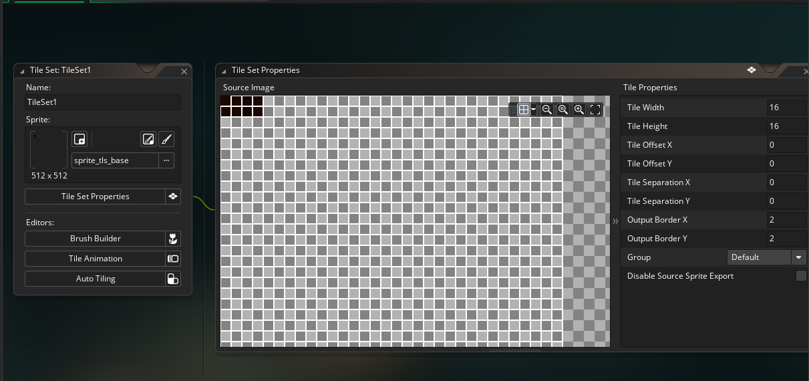

~2 Creating Tiles~
1/19/2026

If your project opens with this Welcome Screen, you can look at it, and then just close the Welcome tab to get back to the project.

Tiles
Pick out a nice floor image from the internet. There are plenty to choose from out there.

You want your floor to be easily digestible by the game. If we just threw this png in there as a background. It would be too large, and take up too much memory. It is a much smarter approach to break this floor up into tiles, and then bring these byte sized pieces into the game. The game sees one tile, and the memory of the game is only recognizing one tile, but the magic displayed here is that while the app, is only seeing the one, the player will see an entire floor.
So, we want our floor to be exactly 32 x 32 pixel squares.
The Grid
In Photoshop we want to start by setting up the grid.
Top Menu- Edit-Preferences. Guides, Grid, & Slices…

Recommended size for the Canvas in Photoshop.
We can start with a simple canvas of 512 x 512. Try multiplying the 32 from the Tile grid size and the 16 from the Total Tiles, and you will come up with the 512 of the canvas size. So, you will want to look at what size you want your tile. By the way, this 32 x 32 is a good size for the floor, and then look at the total number of assets that you believe you will be using as tiles (anything that would use a multitude of images) floors, walls, even doors or treasure chests. 512 X 512 holds a good amount of assets. Just multiply 16 x 16 you will get 256, so you can place 256 different small assets on it.
Choosing your Tile Size
Yes, this 32 × 32 pixels is a solid choice for floors.
It’s large enough to show texture and detail (like cracks or moss), but small enough to keep memory usage low and gameplay smooth.
This size also works well for:
- Walls and barriers
- Doors and gates
- Treasure chests and interactive objects
- Decorative glyphs or ceremonial accents
Planning Your Asset Count
Before you begin painting, ask yourself:
- How many unique tile types will I need?
- Will I include variants (e.g. cracked, mossy, glowing)?
- Do I want transition tiles (e.g. corners, edges, blends)?
- Will I add interactive elements like switches or traps?
If your answer is “a lot,” you might want to scale up to a 1024 × 1024 canvas later. But starting with 512 × 512 keeps things digestible and focused.

So, inside of Photoshop, create your tileset. We use the conventional Game Maker method of naming an asset based on what it is. Even though this will eventually be a tile set, it will start out as a sprite, and then used to create the tile set later in this tutorial.
These will be your set up, settings inside of Photoshop.
512px x 512px, RGB, 72 resolution, Transparent background. Hit Ok
You actually will want to name this with a spr_ prefix first. We save to the sprite folder, and then pull from that to create the tile.
Still inside of Photoshop, Turn on your grid
Top Menu – View -Show - Grid

Put the image in the second square, the first square will have some strange stuff happening to it transparency wise. Actually, you won’t even see your image at all if you place it in the first square.
You can zoom in to fit the tile into the tiny 32px x 32px grid squares into the tile sheet.

Finding your Game files on your computer
You will want to save this into your game files on your computer.
C- Users – User Name - GameMakerProjects

You will want to save this tile sprite as a png. This is done for a number of reasons.
JPG is lossy, meaning it compresses, and alters pixel data.
It doesn’t support transparency.
It can cause visual glitches in tile alignment or edge blending.

Bringing the tile sprite into the Asset Browser
Just because you saved your image file of the new sprite sheet that will be used for your tiles. Does not mean that Game Maker will actually recognize it. In fact, you will be very disappointed when you go the the Asset Browser and see that your new tile sprite sheet is not sitting there.

You will need to create the new sprite tile set. Right click on the Sprite folder and select Create- Sprite

Here you come into a big Creation Panel. It is here that you can import your Sprite for the tile set into the Game.

I named it here spr_tls_base. This way we know it is a sprite, but it will be used as a tile set. Hit Import and then browse to where you saved your tile set in your Sprite folder in Game Maker.

The tiles will be small

Click on Edit Sprite here- Left Panel

You will not have the Image menu show up at the top of the app, until you open the Edit Image Panel

Now look at the very top of the app, you will see that an Image menu has appeared. Click on the Image menu.
Now here we want to take the eye dropper and select the image to select the color. The floor is dark brown. Fill the first square with dark brown. Here is the eye dropper tool and the selection tool Draw a square around the first square after getting the color. Fill the color of dark brown to match your second square.


Hit Escape to deselect

Turning your tile sprite into a Tile Set
Now that you finally have a sprite to represent the floor tile, you will need to turn this sprite into an actual Tile Set. Go to the Tile Sets folder inside of the Asset Browser on the right side of the application.
Right click on the at folder to get to the sub menu.
Tile Sets Folder- Create – Tile Sets.

You will find that by clicking on the Tile Set link in the menu above, that you have entered a whole new world in Game Maker, and here we will be doing every thing that we need to do concerning the creation of tile sets. This panel will open in the center section of your Game Maker App.

On the left side of this new panel, you can name your new tile set. And also choose the sprite that you just created to represent it. Browse to your Sprite to select it. Click on the 3 dots at the end of the line that says No Sprite, to find your tile set sprite.

Watch it, you have your tile set size set to 32 x 32, but is it being interpreted correctly in the Tile Properties section? You will find the Tile Properties, are displayed in the same panel. If your tile properties are not set to 32 x 32, the floor tile will be misrepresented in the room. They will be too small, and there are a lot of other things that can be screwed up as well.
Here, you will see that my own Tile properties for this sheet have come in a 16 x 16. This is bad. Very easy to change. Just highlight the little 16s here and change them to 32.

If it has this little white border that does not seem to fit the tile, try setting the Output Border of both X and Y to 0, in the Tile Properties on the right side of the tile creation panel.
Warning -Do not try and set something like 32 into the x value for horizontal X, it will make the tile disappear when you try to use it from the palette in the room.

You can rename your tileset for this

Rooms
So, now you have your tile for the floor inside of Game Maker; Go to your Rooms to be able to add tiles.

Moving the Palette Around.
If you do not see your tile. Hit the square at the end of the tool menu above it.
To Zoom, use the Zoom button, To Move around, hold down the space bar and move the palette around with your mouse.


To add a tile to the board, just click on the tile you want to add and then drag and drop it onto the board.

Finish laying all the tiles and now you have the floor.